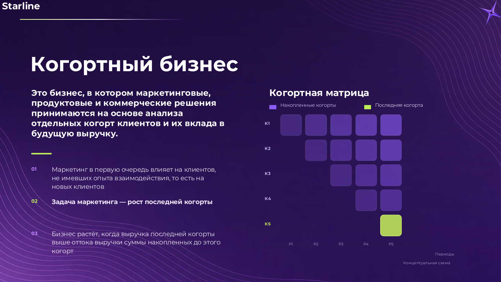
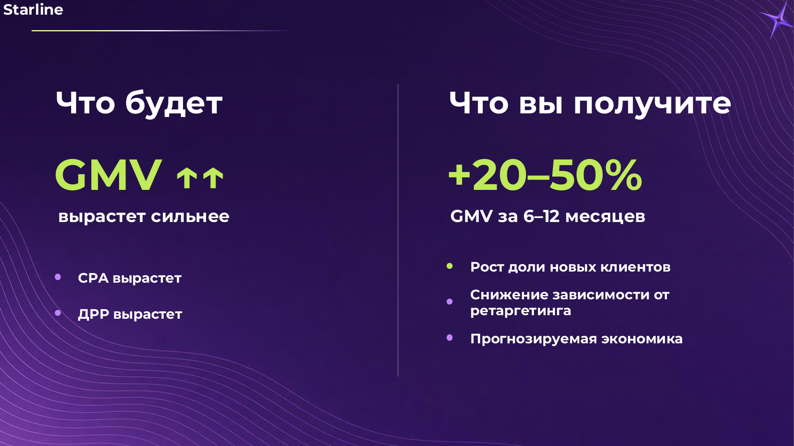
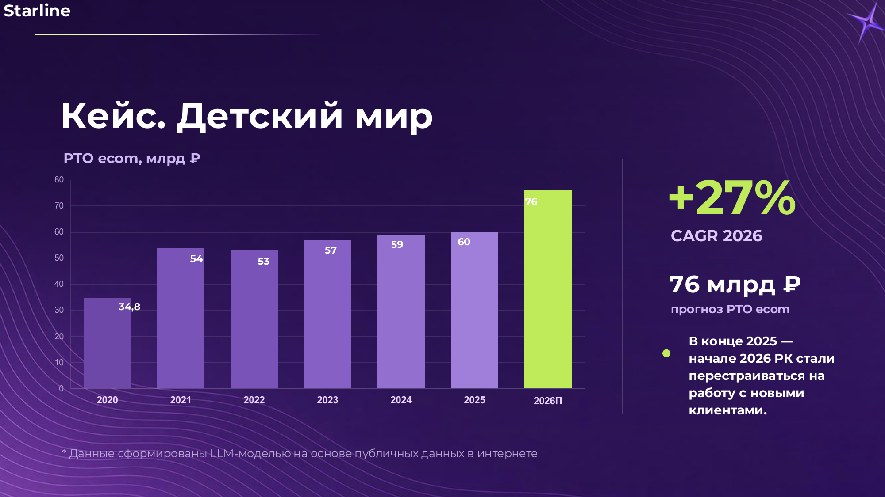
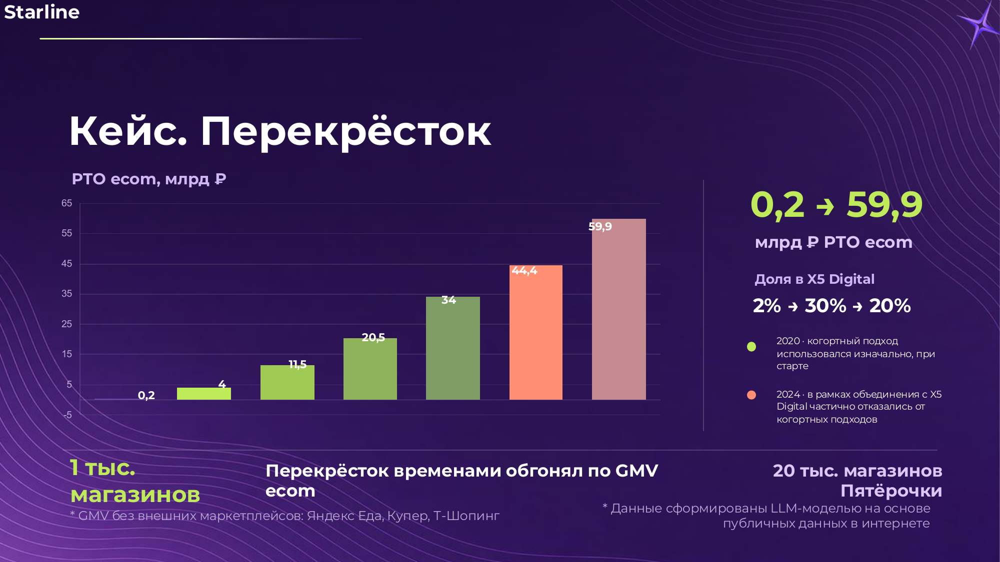

проектов с ростом CAGR
Performance • Media • Analytics • Sales channels
Оператор роста для электронной коммерции
Управляем привлечением новых клиентов, аналитикой и каналами продаж для e-commerce бизнеса.
10+
лет в e-commerce
50+
каналов привлечения
19
каналов продаж
О нас
Рост e-commerce начинается не с CPA, а с новых клиентов
Starline специализируется на росте e-commerce бизнеса через управление привлечением новых клиентов, аналитикой и каналами продаж. Мы собираем performance, media и аналитику вокруг одной задачи - управляемого роста последней когорты клиентов.
один из 19 каналов продаж
мобильные каналы продаж
маркетплейс как канал продаж
Проблема рынка
Реклама может выглядеть эффективной, пока бизнес почти не растет
Оптимизация CPA и перенастройка атрибуции не гарантируют рост GMV. Для e-commerce важнее понимать, как маркетинг влияет на новых клиентов и будущую выручку когорт.
но рост бизнеса не появляется автоматически.
а GMV может почти не измениться.
Когортный подход
Маркетинг должен растить последнюю когорту
Когортный бизнес принимает маркетинговые, продуктовые и коммерческие решения на основе анализа отдельных когорт клиентов и их вклада в будущую выручку.
- Маркетинг прежде всего влияет на новых клиентов.
- Задача маркетинга - рост последней когорты.
- Бизнес растет, когда новая выручка выше оттока старых когорт.


Что получает клиент
Прогнозируемая экономика вместо иллюзии эффективности
+20-50% GMV за 6-12 месяцев
Рост доли новых клиентов
Снижение зависимости от ретаргетинга
Показатель из презентации требует аккуратной юридической формулировки: как ожидаемый эффект подхода, а не безусловная гарантия.
Услуги
Инструменты роста, собранные вокруг e-commerce экономики
Привлечение новых клиентов и рост последней когорты.
Охватные каналы с привязкой к бизнес-эффекту.
Продажи и присутствие в релевантных торговых средах.
Рост через iOS, Android и мобильные сценарии покупки.
Каналы спроса, которые дополняют платное привлечение.
Когортная модель, эксперименты и прогнозирование.
Как мы работаем
От аудита к масштабированию
Аудит
Изучаем рекламу, когорты, каналы продаж, GMV, CPA, ДРР и структуру новых клиентов.
Пилот
Проверяем гипотезы роста последней когорты на ограниченном наборе каналов.
Масштабирование
Расширяем работающие каналы, подключаем аналитику и прогнозируемую экономику.
Кейсы
Примеры когортного мышления в e-commerce

Детский мир
Прогноз РТО ecom 2026: 76 млрд ₽. РК стали перестраиваться на работу с новыми клиентами.

Перекресток
РТО ecom: 0,2 -> 59,9 млрд ₽. Когортный подход использовался изначально при старте.
Данные кейсов в презентации сформированы LLM-моделью на основе публичных данных в интернете и требуют подтверждения перед публикацией.
Команда
Люди, которые отвечают за рост, сервис и технологический стек
Папенов Юрий
CEO. Общий менеджмент. На связи 24/7.
Комков Анатолий
Директор по производству и продукту. Инструменты, эффективность, рост РТО.
Орлов Никита
Client Service Director. Ежедневная коммуникация и контроль кампаний.
Голосниченко Антон
Технический лид. Аналитика, технологический стек, дизайн экспериментов.
Заявка
Проверьте, где на самом деле находится рост вашего e-commerce
Разберем, как реклама влияет на новые когорты клиентов, GMV и прогнозируемую экономику роста.